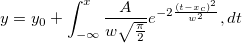
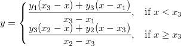
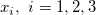
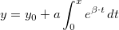

Schnellstart
NLFit-QuickStart
Das Hilfsmittel nichtlinearer Kurvenfit (NLFit) enthält mehr als 200 standardmäßige Anpassungsfunktionen, ausgewählt aus einer Vielfalt von Kategorien und Disziplinen. Wenn die Funktion, die Sie suchen, nicht enthalten ist, können Sie immer auch Ihre eigene Funktion mit Hilfe von Origins flexiblem Hilfsmittel Fitfunktion erstellen definieren.
Legen Sie Ihre Eingabedaten fest.
Mit Origin können Sie Eingabedaten in einem Arbeitsblatt oder direkt in einem Diagramm im Voraus auswählen, bevor der Dialog NLFit geöffnet wird. Sobald Sie den Dialog NLFit geöffnet haben, können Sie die Daten im Zweig Eingabedaten auf der Seite Datenauswahl und der Registerkarte Einstellungen auch ändern, hinzufügen, entfernen oder zurücksetzen.
Daten im Arbeitsblatt auswählen
Sie können Daten aus einer oder mehreren Arbeitsblattspalten, aus Teilen von Arbeitsblattspalten oder sogar aus nicht zusammenhängende Teilen von Arbeitsblattspalten auswählen. Halten Sie die Strg-Taste gedrückt, wenn Sie nicht nebeneinander angeordnete Daten auswählen möchten.
Daten im Diagramm auswählen
Wenn ein Diagrammfenster aktiv ist, wird die aktive Kurve in dem aktiven Layer als Eingabe für die Anpassung vorausgewählt.
Die folgenden Optionen sind für andere Fälle von Datenvorauswahl verfügbar:
Mit Standardfunktionen anpassen
Origins Standardfitfunktionen schließen automatischen Parameterinitialisierungscode ein, der Initialisierungsparameterwerte an Ihren/n Datensatz/-sätze vor der Anpassung entsprechend abstimmt.
Mit einigen wenigen Klicks können Sie die Kurvenanpassung durchführen und die Parameterwerte für den "besten Fit" erhalten. Sie können die am besten angepasste Kurve in Ihre ursprüngliche Datenzeichnung einfügen:
- Markieren Sie die Daten im Arbeitsblatt oder aktivieren Sie das Diagrammfenster, das Sie anpassen möchten, und wählen Sie im Menü Analyse: Anpassen: Nichtlinearer Fit, um den Dialog NLFit zu öffnen.
- Navigieren Sie in den Auswahllisten Kategorie und Funktion, um eine Standardanpassungsfunktion auszuwählen.
- Wenn eine Standardfunktion nicht gefunden wird, klicken Sie auf Suchen, um Anpassungsfunktionen suchen zu öffnen, wo Sie eine Stichwortsuche durchführen und Funktionen laden können (siehe den Tipp unten).
- Klicken Sie auf die Schaltfläche Fit, um die Anpassung durchzuführen und die Ergebnisarbeitsblätter zu erhalten.
 |
 Wenn Sie auf die Schaltfläche Suchen klicken, werden Sie ein Symbol für die App Fitting Function Library in der oberen rechten Ecke des Dialogs Suchen bemerken. Klicken Sie auf das Symbol, um eine Liste der herunterladbaren Funktionen zu durchsuchen. Alternativ haben Sie die Möglichkeit, falls Sie per Stichwörtern nach Funktionen suchen und keine Funktion gefunden wird, erneut die App Library zu öffnen und nach einer Add-on-Funktion zu suchen. Beachten Sie, dass diese App auf den neuesten Versionen von Origin vorinstalliert ist. Wenn Sie auf die Schaltfläche Suchen klicken, werden Sie ein Symbol für die App Fitting Function Library in der oberen rechten Ecke des Dialogs Suchen bemerken. Klicken Sie auf das Symbol, um eine Liste der herunterladbaren Funktionen zu durchsuchen. Alternativ haben Sie die Möglichkeit, falls Sie per Stichwörtern nach Funktionen suchen und keine Funktion gefunden wird, erneut die App Library zu öffnen und nach einer Add-on-Funktion zu suchen. Beachten Sie, dass diese App auf den neuesten Versionen von Origin vorinstalliert ist.
|
Gängige nichtlineare Anpassungen mit Standardfunktionen
Um Anwendern das Durchführen von typischen Aufgaben der nichtlinearen Anpassung mit dem Hilfsmittel NLFit zu erleichtern, bietet Origin viele schnelle Einträge im Menü Analyse: Anpassen:
Implizite Kurvenanpassung
Wählen Sie Analyse: Anpassen: Nichtlineare implizite Kurvenanpassung, um das Hilfsmittel NLFit bei ausgewählter Funktionskategorie Implicit zu öffnen. Sie können an diesem Beispiel sehen, wie eine schnelle implizite Anpassung durchgeführt wird.
Oberflächenanpassung
Wählen Sie Analyse: Anpassen: Nichtlineare Oberflächenapproximation, um das Hilfsmittel NLFit bei ausgewählter Funktionskategorie Surface zu öffnen. Sie können an diesem Beispiel sehen, wie Sie schnell eine Oberflächenanpassung durchführen.
Exponentielle Anpassung
Wählen Sie Analyse: Anpassen: Exponentieller Fit, um das Hilfsmittel NLFit bei ausgewählter Funktionskategorie Exponential zu öffnen. Sie können an diesem Beispiel sehen, wie Sie eine schnelle exponentielle Anpassung durchführen.
Einzelnen Peak anpassen
Wählen Sie Analyse: Anpassen: Einzelne Peaks anpassen, um das Hilfsmittel NLFit bei ausgewählter Funktionskategorie Peak Functions zu öffnen. Sie können an diesem Beispiel sehen, wie Sie eine schnelle Peakanpassung mit einer Peakfunktion durchführen.
Sigmoidaler Fit
Wählen Sie Analyse: Anpassen: Sigmoidaler Fit, um das Hilfsmittel NLFit bei ausgewählter Funktionskategorie zu öffnen. Sie können an diesem Beispiel sehen, wie Sie eine schnelle sigmoidale Anpassung durchführen.
Mit benutzerdefinierten Funktionen anpassen
Können Sie keine geeignete Anpassungsfunktion in unserer integrierten Funktionsbibliothek finden? Kein Problem. Das Hilfsmittel Hilfsmittel: Fitfunktionen erstellen kann Sie Schritt für Schritt durch die Definition von benutzerdefinierten Anpassungsfunktionen führen.
Mit mehreren Datensätzen anpassen
Haben Sie mehrere Datensätze, die Sie gleichzeitig anpassen möchten? Mit Origin können Sie jeden Datensatz separat anpassen und die Ergebnisse in separaten Berichten oder in einem zusammengefassten Bericht ausgeben. Alternativ können Sie eine globale Anpassung mit gemeinsamen Parametern durchführen oder einen zusammengefassten Fit, der replizierte Daten in einem einzelnen Datensatz vor der Anpassung kombiniert.
-
Globale Anpassung mit gemeinsamen Parametern
Die Parameter in der Anpassungsfunktion können optional unter allen Datensätzen geteilt werden.
-
Zusammengefasster Fit für replizierte Daten
Für replizierte Daten können Sie wählen, alle Datenpunkte in einer Kurve zusammenzufassen und sie als einen gesamten Datensatz anzupassen.
-
Unabhängiger Fit für mehrere Kurven
Sie können wählen, mehrere Kurven unabhängig anzupassen. Die unabhängige Anpassung von mehreren Kurven kann eine nach der anderen durchgeführt werden, um einen separaten Bericht für jede Kurve oder gleichzeitig für alle einen zusammengefassten Bericht zu erstellen.
-
Bedienelemente der Anpassung
Müssen Sie die Analyse Ihrer Kurvenanpassung fein einstellen? Mit Origin haben Sie die volle Kontrolle über den Kurvenanpassungsprozess.
Parameter festlegen
-
Obere und untere Schranken festlegen
-
Lineare Nebenbedingungen festlegen
-
|
In dieser Tabelle erfahren Sie, wie Sie lineare Nebenbedingungen schreiben.
|
Optionen für die erweiterte Anpassung
Zusätzlich zu den grundlegenden Anpassungsoptionen haben Sie auch Zugriff auf die weiteren Optionen für die erweiterte Anpassung.
Anpassung mit X- und/oder Y-Fehler
Schritt 1 Wählen Sie den Iterationsalgorithmus der orthogonalen Distanzregression.
-
Schritt 2 Wählen Sie die geeignete Gewichtungsmethode.
-
Mit Kopien anpassen
-
Abgeleitete Parameter erhalten
-
Y von X finden
-
Beispiele
Exponentielle Funktionen anpassen
- Markieren Sie die Daten und wählen Sie im Menü Analyse: Anpassen: Exponentieller Fit.
- Wählen Sie die Anpassungsfunktion ExpDecay3 in der Auswahlliste Funktion.
- Klicken Sie auf die Schaltfläche Fit.
Einzelnen Peak anpassen
- Markieren Sie die Daten und wählen Sie im Menü Analyse: Anpassen: Einzelne Peaks anpassen.
- Wählen Sie die Anpassungsfunktion Lorentz in der Auswahlliste Funktion auf der Unterregisterkarte Funktionsauswahl. Gehen Sie zur Unterregisterkarte Erweitert, setzen Sie die Anzahl der Kopien auf 2. Da es drei Peaks in der Kurve gibt, können wir sie mit den Kopien anpassen.
- Klicken Sie auf die Schaltfläche Fit.
Sigmoidale Funktionen anpassen
- Markieren Sie die Daten und wählen Sie im Menü Analyse: Anpassen: Sigmodialer Fit.
- Wählen Sie die Anpassungsfunktion Logistic in der Auswahlliste Funktion.
- Klicken Sie auf die Schaltfläche Fit.
Implizite Funktionen anpassen
- Markieren Sie die Daten und wählen Sie im Menü Analyse: Anpassen: Nichtlineare implizite Kurvenanpassung.
- Wählen Sie eine Anpassungsfunktion in der Auswahlliste Funktion.
- Klicken Sie auf die Schaltfläche Fit.
-
Lesen Sie dieses Tutorial, um zu erfahren, wie eine implizite Anpassungsfunktion definiert wird.
Mit Integralen anpassen
Möchten Sie wissen, welche Art von Integrationsfunktion angepasst werden kann und wie Sie Ihre eigene Anpassungsfunktion definieren?
Fall 1
 /(b + x))}}{a+(x_i^2+x^2)}\, dx_i")
Hier ist  die unabhängige Integralvariable, während
die unabhängige Integralvariable, während  auf die unabhängige Anpassungsvariable hinweist. Die Modellparameter
auf die unabhängige Anpassungsvariable hinweist. Die Modellparameter  ,
,  ,
,  und sind angepasste Parameter, die wir aus den Beispieldaten erhalten wollen.
und sind angepasste Parameter, die wir aus den Beispieldaten erhalten wollen.
Weitere Einzelheiten erfahren Sie in diesem Tutorial.
Fall 2
^2}{2b^2}-xt}\, dt)")
wobei a und b die Parameter in der Anpassungsfunktion sind.
Initialisierungsparameter sind: a=1e-4, b=1e-4. Beachten Sie, dass die Integralfunktion einen Peak enthält, dessen Zentrum ungefähr bei a liegt und dessen Breite 2b ist. Die Breite des Peaks (2e-4) ist sehr schmal im Vergleich zum Integralintervall [0,1]. Um sicherzustellen, dass es korrekt i die Nachbarschaft des Peakzentrums integriert wird, wird das Integralintervall [0,1] in drei Segmente unterteilt: [0,a-5*b], [a-5*b,a+5*b], [a+5*b,1]. Es wird in jedem Segment integriert, und danach werden die drei Integrale addiert.
Weitere Einzelheiten erfahren Sie in diesem Tutorial.
Fall 3
- 
In der Anpassungsfunktion gibt es vier Parameter. Um eine Integration durchzuführen, müssen drei von ihnen an den Integrand weitergegeben und die unabhängige Variable als obere Grenze verwendet werden. Daher sollten Sie zuerst den Integrand definieren und dann die Funktion integral(), um Integration in Ihrem Anpassungsfunktionskörper durchzuführen.
Weitere Einzelheiten erfahren Sie in diesem Tutorial.
Mit Faltung anpassen
Origin selbst verfügt über zwei weit verbreitete Faltungsfunktionen in der Kategorie Faltung:
- GaussMod() -- exponentiell modifizierte Gaussian-Peakfunktion (EMG) zur Verwendung in der Chromatographie.
- Voigt() -- Faltung einer Gaussian-Funktion (wG für FWHM) und eine Lorentzian-Funktion
Wenn Sie eine neue Faltungsfunktion erstellen möchten, wäre es ratsam, das untenstehende Tutorial zu lesen.
Faltung von zwei Funktionen
-
^2}{w_2^2}}+(f\;*\;g)(x)")
wobei =\frac{s}{\pi}\cdot\frac{\tau_Lx_0^2(x_L^2-x_0^2)}{(x-x_{c1})\tau_L((x-x_{c1})^2-x_L^2)^2+((x-x_{c1})^2-x_0^2)^2}") ,
,
-
=\frac{1}{w_1\sqrt{\pi/2}}e^{-\frac{2x^2}{w_1^2}}") .
.
 ,
,  ,
,  , s,
, s,  ,
,  und
und  sind Anpassungsparameter.
sind Anpassungsparameter.  ,
,  ,
,  , und
, und  sind Konstanten in der Anpassungsfunktion.
sind Konstanten in der Anpassungsfunktion.
Lesen Sie weitere Einzelheiten in diesem Tutorial.
Faltung der exponentiellen Zerfallsfunktion mit Gaussian-Antwort
-

Dieser Versuch geht davon aus, dass das Ausgabesignal die Faltung einer exponentiellen Zerfallsfunktion mit einer Gaussian-Antwort ist, wie unten gezeigt:

Jetzt, da wir bereits das Ausgabesignal und die Antwortdaten haben, können wir die exponentielle Zerfallsfunktion ermitteln, indem wir das Signal an das unten stehende Modell anpassen:

Weitere Einzelheiten erfahren Sie in diesem Tutorial.
Wenn Sie einen Peak entfalten müssen, lesen Sie bitte diese Seite in der Schnellhilfe.
Stückweise Funktion anpassen
Origin selbst verfügt über zwei weit verbreitete stückweise Funktionen in der Kategorie Stückweise:
- PWL2 -- stückweise lineare Funktion mit zwei Segmenten
- PWL3 -- stückweise lineare Funktion mit drei Segmenten
Wenn Sie eine neue stückweise Funktion erstellen möchten, wäre es ratsam, die untenstehenden Tutorials zu lesen.
Fall 1

In dem Diagramm oben besteht die Kurve aus zwei Liniensegmenten. Sie kann mit einer stückweisen linearen Funktion angepasst werden. Der Ausdruck der Funktion kann folgendermaßen aussehen:
- 
wobei x1 und x2 die X-Werte der Kurvenendpunkte sind. Sie sind während der Anpassung festgelegt. x3 ist der X-Wert bei der Schnittstelle der zwei Segmente, und y1, y2 und y3 sind jeweils die Y-Werte bei .
Lesen Sie weitere Einzelheiten in diesem Tutorial.
Fall 2

Dem Diagramm oben ist zu entnehmen, dass die Kurve aus einem exponentiellen Kurvensegment und einem Geradensegment besteht, wie in der Gleichung unten definiert:

Lesen Sie weitere Einzelheiten in diesem Tutorial.
Mit mehreren Variablen anpassen
Origin selbst verfügt über drei weit verbreitete Funktionen für mehrere Variablen in der Kategorie Mehrere Variablen:
- GaussianLorentz -- eine Kombination aus Gaussian- und Lorentz-Funktionen mit gemeinsamer Basislinie und Peakzentrum
- HillBurk -- eine Kombination aus Hill- und Burk-Modellen mit zwei unabhängigen und zwei abhängigen Variablen.
- HillBurk -- eine Kombination aus Linien- und Exponentialmodellen mit einer unabhängigen und zwei abhängigen Variablen.
Wenn Sie eine neue Funktion für mehrere Variablen erstellen möchten, wäre es ratsam, die untenstehenden Tutorials zu lesen.
Eine Kurve mit zwei verschiedenen Funktionen, die gemeinsame Parameter haben, anpassen
Die Anpassungsfunktion für das obige Diagramm ist eine Kombination der Funktionen Gaussian und Lorentz, die sich y0 und xc teilen:
^2}{w_1^2}}")
 ^2+w_2^2}")
Lesen Sie weitere Einzelheiten in diesem Tutorial.
Mit zwei unabhängigen Variablen anpassen
*x1}")
wobei x1 und x2 unabhängige Variablen sind und ki, km und vm Anpassungsparameter sind.
Lesen Sie weitere Einzelheiten in diesem Tutorial.
Komplexe Funktion anpassen
Um in Origin eine komplexe Funktion anzupassen, müssen Sie die realen und imaginären Teile der komplexen Daten in zwei verschiedenen Spalten als zwei abhängige Variablen trennen.
Unten ist ein Beispiel, um zu zeigen, wie Sie Ihre komplexe Funktion definieren:
complex cc = A/(1+1i*omega*tau); y1 = cc.m_re; y2 = cc.m_im;
wobei 1i als imaginäre Einheit "i" verwendet wird, omega die unabhängige Variable ist, A, tau Anpassungsparameter sind und y1 und y2 die realen und imaginären Teile von cc sind.
Mit gewöhnlicher Differenzialgleichung anpassen
In Origin können Sie eine gewöhnliche Differenzialgleichung (ODE) erster Ordnung definieren, indem Sie NAG-Funktionen aufrufen.
Unten ist ein Beispiel aufgeführt, das zeigen soll, wie Sie eine gewöhnliche Differenzialgleichung erster Ordnung anpassen:


wobei a ein Parameter in der gewöhnlichen Differenzialgleichung und y0 der Anfangswert für die gewöhnliche Differenzialgleichung (ODE) ist. Die NAG-Funktionen d02pvc und d02pcc werden mit der Runge-Kutta-Methode aufgerufen, um das ODE-Problem zu lösen.
Lesen Sie weitere Einzelheiten in diesem Tutorial.
Mit externer DLL anpassen
Origin C-Funktionen können Funktionen in externen DLLs aufrufen, die mit C, C++ oder Fortran Compilern erstellt wurden. Um dies zu tun, muss Ihre Quelldatei eine include-Anweisung für die Headerdatei besitzen, die die Funktionen in Ihrer externen DLL deklariert.
Unten ist ein Beispiel aufgeführt, das zeigen soll, wie die GSL-Funktion der GNU Scientific Library verwendet wird, um das folgende Modell anzupassen:
- 
Lesen Sie weitere Einzelheiten in diesem Tutorial.
Wenn Sie mehr zum Aufrufen von DLL-Funktionen von Drittanbietern wissen möchten, lesen Sie bitte diese Seite.
Standardfunktion in benutzerdefinierter Anpassungsfunktion angeben
Mit Origin können Sie beim Definieren einer neuen Funktion eine Standardfunktion angeben.
Unten ist ein Beispiel aufgeführt, das zeigen soll, wie ein schiefer Gaussian-Peak angepasst wird, der als aus zwei Gaussian-Funktionen bestehend betrachtet werden kann. Diese zwei Gaussian-Kurven teilen die gleiche Basislinie und das gleiche Peakzentrum (xc), besitzen aber unterschiedliche Peakbreiten (w) und Amplituden (A).
Der Funktionskörper ist folgendermaßen definiert:
y = x<xc? nlf_Gauss(x, y0, xc, w1, A1) : nlf_Gauss(x, y0, xc, w2, A2);
wobei nlf_Gauss() die standardmäßige Gauss-Funktion ist.
Lesen Sie weitere Einzelheiten in diesem Tutorial.